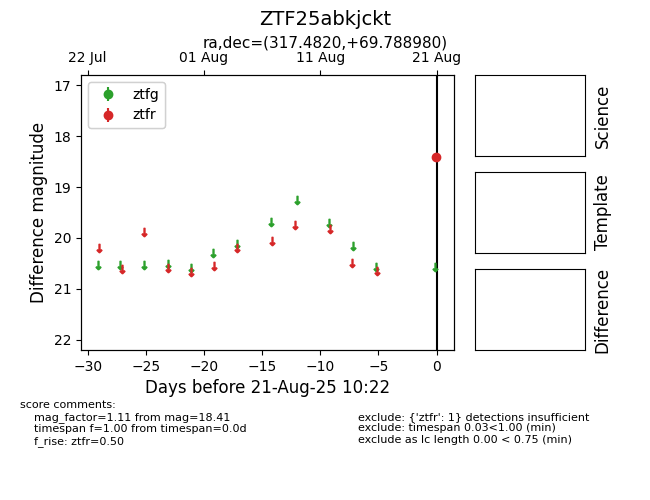

Target ZTF25abkjckt at 2025-08-21 10:22, see:
FINK: fink-portal.org/ZTF25abkjckt
Lasair: lasair-ztf.lsst.ac.uk/objects/ZTF25abkjckt
ALeRCE: alerce.online/object/ZTF25abkjckt
alt names
ZTF25abkjckt (ztf,alerce)
coordinates:
equatorial (ra, dec) = (317.4820,+69.78898)
galactic (l, b) = (105.8418,+14.66766)
photometry
last ztfr=18.41
1 ztfr detections
